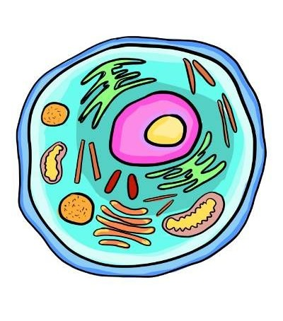
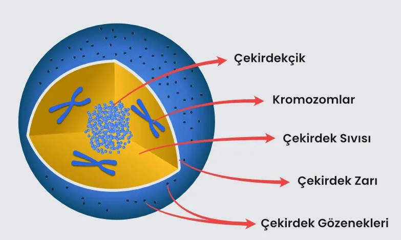
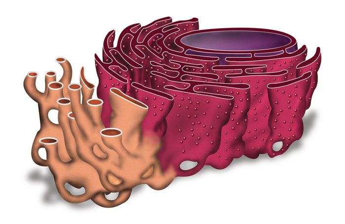
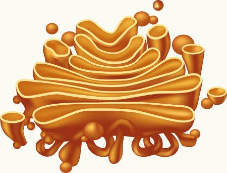
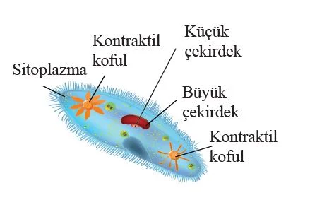
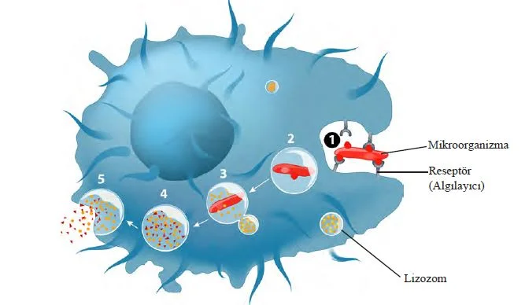
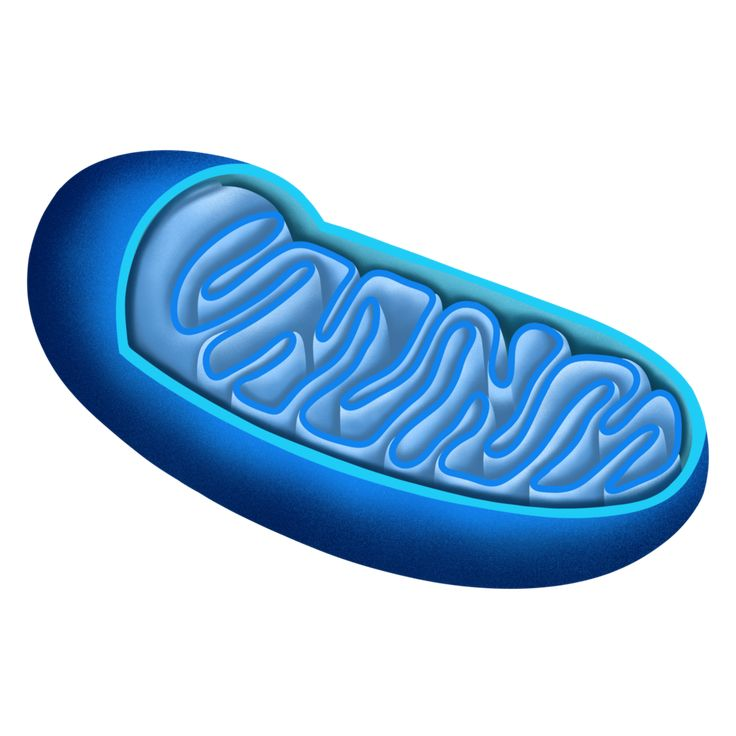
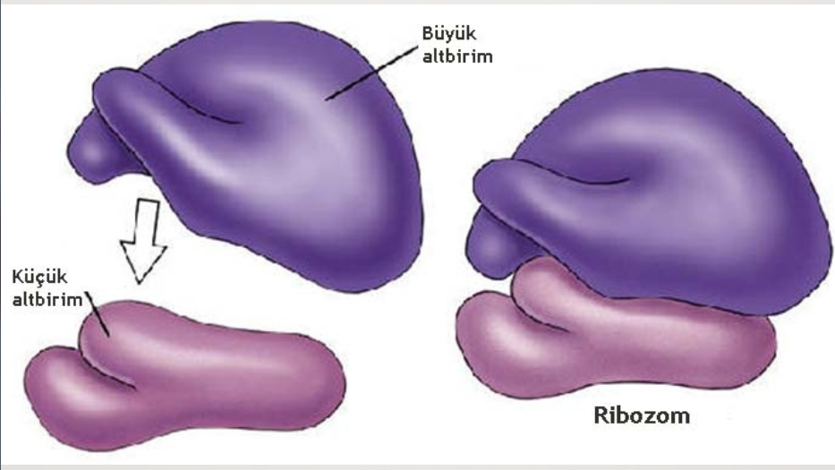

Artık iki ayrı site yok — her şey tek sayfada. Konu seç, aşağı kay ve çalışmaya başla. Şimdilik Hücre Organelleri aktif, diğer konular yakında aynı sayfaya eklenecek.

Karta tıkla, sayfa seni ilgili bölüme kaydırır. Yeni konu eklenince buraya kart + aşağıya bölüm ekleyeceğiz.
7 organel + PDF sunum. Aşağıdaki bölüme kaydırır.
Bölüme Git →Örnek pasif konu. Eklendiğinde buraya yeni bölüm açılacak.
HazırlanıyorÖrnek pasif konu. Eklendiğinde buraya yeni bölüm açılacak.
Hazırlanıyor
Hücrenin yönetim ve kalıtım merkezidir. DNA'yı barındırır ve bölünme dahil tüm yaşamsal faaliyetleri yönetir.

Hücre içi madde taşıma ve iletim ağını oluşturur. Çekirdek zarı ile hücre zarı arasında uzanır.

Salgı üretim ve paketleme merkezidir. Maddeleri veziküller halinde gideceği yere gönderir.

Depo organelidir. Besin, atık ve su depolar. Bitkide büyük ve az, hayvanda küçük ve çoktur.

Hücre içi sindirim organelidir. Güçlü enzimlerle büyük molekülleri parçalar.

Enerji santralidir. Oksijenli solunumla ATP üretir.

Protein sentez fabrikasıdır. Tüm canlılarda bulunur, zarsızdır.
Hücre yapısı hakkında daha detaylı bilgi için PDF sunumu incele.